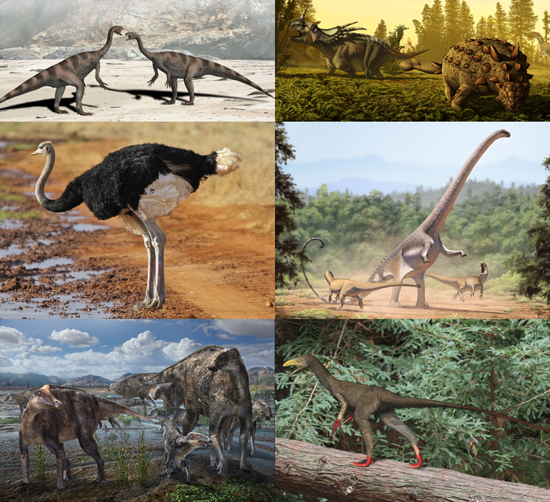
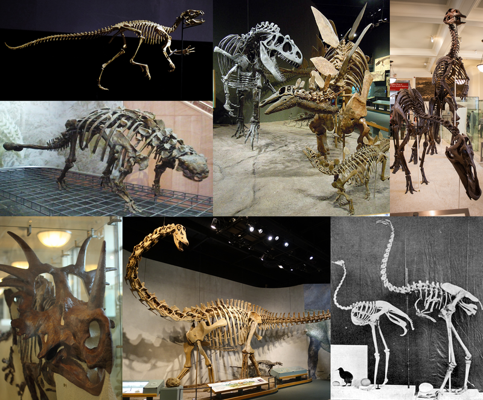

Диноза́вры[1] (лат. Dinosauria) — группа архозавров из клады авеметатарзалий. Динозавры возникли в триасовом периоде, между 243 млн и 233,23 млн лет назад, и стали доминирующими наземными позвоночными после триасово-юрского вымирания 201 млн лет назад; их доминирование продолжалось на протяжении остальной части мезозойской эры, в течение юрского и мелового периодов. Хотя традиционно динозавры рассматривались как полностью вымершая группа в ранге надотряда, большинство современных специалистов придерживается принципов кладистической классификации, в соответствии с которыми птицы являются ныне живущими оперёнными динозаврами из клады теропод, возникшими во время верхнеюрской эпохи, либо в меловом периоде (в зависимости от определения таксона[a]), и, в отличие от всех остальных динозавров, пережившими мел-палеогеновое вымирание 66 млн лет назад. Условно всех динозавров, за исключением птиц, называют нептичьими динозаврами.
посмотри ссылкуМы все прекрасно знаем, что ничего в мире не возникает на пустом месте. Это касается и происхождения всех «ужасных и могучих» динозавров на Земле. Не могли они спонтанно появиться в один прекрасный солнечный дней и просуществовать приблизительно 230 миллионов лет. Нет никакого сомнения, что у динозавров был конкретный предок, и по эволюционной теории Дарвина в результате естественного видового отбора и приспособления к окружающей среде очень медленно и поэтапно от этого общего предка и появились древние ящеры. Этим предком и оказалась примитивная рептилия триасового периода под названием «архозавр».
Скелет Скелеты некоторых динозавров. 1-й ряд (сверху вниз): Heterodontosaurus tucki, Scolosaurus thronus, Allosaurus fragilis и Stegosaurus stenops, Edmontosaurus annectens. 2-й ряд: Titanoceratops ouranos, Diplodocus sp., киви (Apteryx sp.), страус (Struthio camelus), Dinornis giganteus. Ископаемые скелеты динозавров почти всегда являются единственным палеонтологическим материалом, по которому учёные пытаются воссоздать внешний облик древних ящеров. Характерной особенностью скелетов, разделяющей динозавров на две основные группы, является строение тазовых костей. У ящеротазовых динозавров подвздошные кости направлены вверх, где они соединяются с крестцом, седалищные — вниз и назад, а лобковые направлены вперёд и вниз. У птицетазовых динозавров седалищные и подвздошные кости устроены так же, а лобковые кости имеют две ветви, направленные в разные стороны: одна — вперёд, а вторая — назад, параллельно седалищным костям. В настоящее время открытия большого видового разнообразия привели к тому, что трудно представить универсально согласованный список отличительных черт динозавров; почти всех обнаруженных на сегодняшний день динозавров разделяют определённые изменения по отношению к наследственному от архозавров скелету. Хотя некоторые более поздние группы динозавров показали признаки дальнейшего изменения общих черт, они считаются типичными динозаврами; такие общие черты между различными таксономическими группами называются синапоморфией. Синапоморфия динозавров включает удлинённый гребень на плечевой кости или верхней кости руки для возможности крепления дельтопекторальных мышц; выступ в задней части подвздошной кости или главной тазовой кости; голень или кость голени, отличающаяся широким нижним краем, а также возрастание проекции на таранной кости, формирующую нижнюю часть голеностопного сустава[75]. Существует множество других скелетных особенностей динозавров. Однако, поскольку они либо были общими для других групп архозавров или не присутствуют у всех ранних динозавров, эти признаки не считаются синапоморфией. Как и все архозавры, динозавры имели диапсидный тип черепа с двумя, а не с одной, как у других пресмыкающихся, височными впадинами позади глазниц[86]. Кроме того, несколько характерных черт могли считаться синапоморфией, которые самостоятельно развивались у различных групп динозавров, но отсутствуют у ранних видов динозавров. Они включают удлинение лопатки; в тазовом поясе у динозавров был сложно устроенный крестец из трёх и более сросшихся позвонков (также три сращённых позвонка можно найти у некоторых других архозавров, в то время как у герреразавра их было два)[75] и прободенная вертлужная впадина, куда входила головка бедренной кости. Эти анатомические особенности сделали динозавров самыми подвижными из сухопутных обитателей мезозоя[87]. Скелетные особенности, разделяющие динозавров на две группы, представляют собой ещё одно важное для палеонтологов доказательство явного родства между птицами и динозаврами. Области сходства скелетов птиц и динозавров включают в себя в основном строение шеи, конечностей и грудной пояс. Сравнение их скелетов путём кладистического анализа укрепляет аргументы в пользу их родства.
